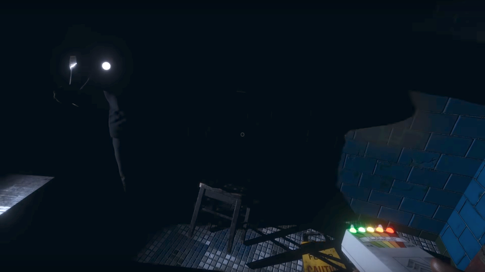

EMF Level 5 - Niektóre duchy potrafią tak silnie wpływać na otoczenie, że wskaźnik pola elektromagnetycznego może pokazać poziom 5. Są to Banshee, Jinn, Oni, Phantom, Revenant i Shade.

Fingerprints - Niektóre duchy zostawiają odciski palców na obiektach, z którymi weszły w interakcje. Są to Banshee, Poltergeist, Revenant, Spirit oraz Wraith. Ich odciski można zauważyć naświetlając powierzchnię światłem UV. Najczęściej są na przełącznikach od światła, szybach okien, drzwiach oraz kratach drzwi więziennych.
Freezing temperatures - Duchy charakteryzują się obniżaniem temperatury w swoim otoczeniu. Niektóre ponadto potrafią ją sprowadzić poniżej 0°C. Można ja poznać po wskazaniach termometru lub poprzez widoczny oddech. Potrafią to Banshee, Demon, Mare, Phantom, Wraith i Yurei.
Ghost orbs - W otoczeniu niektórych duchów często latają widmowe sfery, widoczne jedynie w trybie noktowizyjnym kamery. Jedne poruszają się jak szalone, inne spokojniej i wolniej. Charakteryzują się tym Jinn, Mare, Phantom, Poltergeist, Shade i Yurei.
Ghost writing - Niektóre duchy potrafią zapisywać specjalną książkę. Są to Demon, Oni, Revenant, Shade, Spirit i Yurei. Symbole na kartkach są zapisywane losowo więc nie można wnioskować, że na przykład Yurei zapisuje "Die Die Die".
Spirit box - Niektóre duchy potrafią się z nami komunikować poprzez spirit boxa. Są to Demon, Jinn, Mare, Oni, Poltergeist, Spirit i Wraith. Czasami duch zrozumie naszą wypowiedź ale nie zeche odpowiedzieć, wtedy urządzenie wskaże "Nothing Detected". Pytania jakie można zadać znajdziesz <Tutaj>